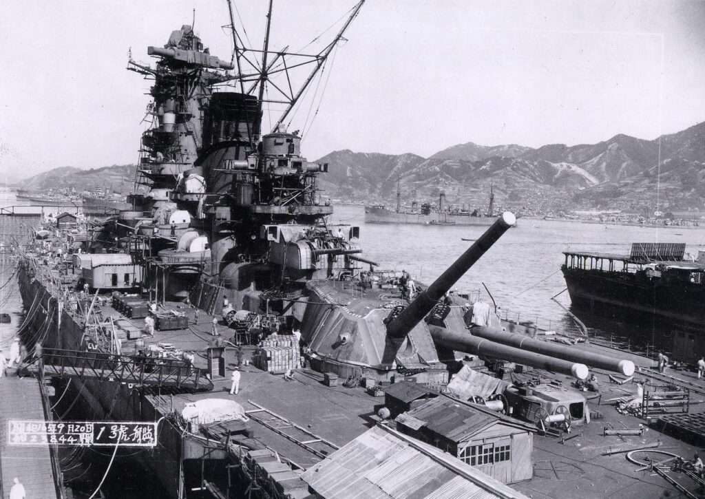
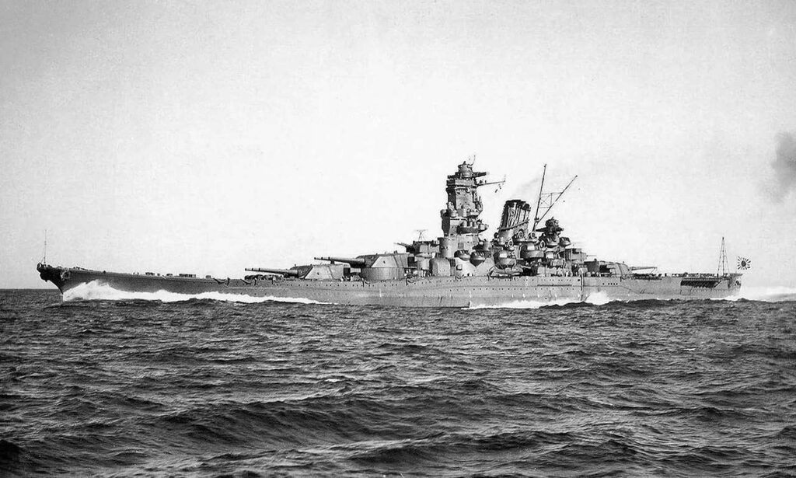
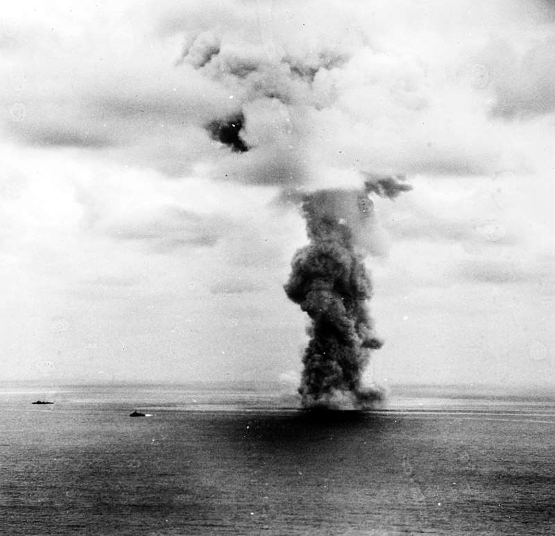

Yamato ne kadar etkiliydi?
Japon savaş gemisi Yamato o güne kadar inşa edilmiş en büyük ve en ağır silahlı savaş gemisiydi. Müthiş tasarımına rağmen Yamato sınırlı sayıda muharebe görmüş ve nihayetinde 1945 yılında Ten Go Operasyonu sırasında ezici ABD hava gücü tarafından batırılmıştır.
Yamato’nun Tasarımı
Yamato sınıfı savaş gemileri, Japonya’nın Amerika Birleşik Devletleri’nin deniz üstünlüğüne karşı koyma stratejisinin bir parçası olarak tasarlandı. Sınırlı doğal kaynaklara sahip bir ada ülkesi olan Japonya, deniz yollarını güvence altına almak ve çıkarlarını korumak için büyük ölçüde donanmasına güveniyordu. Genişleyen ABD Donanması’nın yarattığı tehdidin farkında olan Japonya, dünyadaki mevcut veya planlanan tüm gemileri geride bırakabilecek bir savaş gemisi sınıfı geliştirmeye çalıştı. Bu stratejik zorunluluk, eşsiz bir ateş gücü, koruma ve dayanıklılık elde etmeyi amaçlayan Yamato’nun tasarımını ve inşasını yönlendirdi.

Yamato sınıfı savaş gemilerinin tasarım süreci 1930’ların başında, donanmanın yeniden silahlandığı ve rekabetin yoğun olduğu bir dönemde başladı. Japon donanma mimarları ve mühendisleri “nicelikten çok nitelik” ilkelerini somutlaştıracak bir gemi yaratma zorluğuyla karşı karşıya kaldılar. Bu, her bir savaş gemisinin aynı anda birden fazla düşman gemisiyle mücadele edebilmesi ve savaşta galip gelmek için üstün ateş gücü ve zırhtan yararlanabilmesi gerektiği anlamına geliyordu.
Yamato, Japonya’nın önde gelen gemi inşa tesislerinden biri olan Kure Donanma Cephaneliği’nde inşa edildi. Tersanenin, savaş gemisinin devasa boyutlarına uyum sağlaması için özel olarak modifiye edilmesi gerekiyordu. Potansiyel düşmanlara istihbarat sızmasını önlemek için inşaat gizlilik içinde yürütülmüştür. Bu gizlilik projenin tamamına yayılmış, Japon hükümeti ve ordusu Yamato sınıfı gemilerin gerçek yeteneklerini ve özelliklerini gizlemek için büyük çaba sarf etmiştir.
Yamato’nun omurgası 4 Kasım 1937’de yerleştirildi. İnşa süreci eşi benzeri görülmemiş büyüklükte kaynak ve işgücü gerektiriyordu. Savaş gemisini inşa etmek için mühendisler, teknisyenler ve işçiler de dahil olmak üzere binlerce işçi istihdam edildi. Proje, Japonya’nın endüstriyel kapasitesini zorlayan büyük miktarlarda çelik ve diğer malzemelere ihtiyaç duyuyordu. Bu zorluklara rağmen inşaat hızla ilerledi ve Japonya’nın deniz gücünü acilen destekleme ihtiyacını yansıttı.

Gemi 263 metre gibi etkileyici bir uzunluğa sahipti, bu da onu uç uca yerleştirilmiş üç futbol sahasından daha uzun yapıyordu. Kirişi ya da genişliği 38,9 metreydi ve ağır silahları ve kalın zırhı için geniş ve istikrarlı bir platform sağlıyordu. Geminin su çekimi, yani su hattı ile gövdenin dibi arasındaki dikey mesafe 10,4 metreydi.
Yamato’nun tasarımının en dikkat çekici yönlerinden biri de silahlarıydı. Savaş gemisi, o güne kadar bir savaş gemisine yerleştirilmiş en büyük deniz topu olan dokuz adet 460 milimetrelik ana topla donatılmıştı. Bu toplar, her biri 42 kilometre mesafeye 1.460 kilogram ağırlığa kadar mermi atabilen üç adet üçlü tarete yerleştirilmişti. Bu topların ateş gücü eşsizdi ve düşman zırhlılarının kalın zırhlarını delip yıkıcı hasar vermeyi amaçlıyordu.
Yamato, ana silahlarına ek olarak, kapsamlı bir ikincil ve uçaksavar silah dizisine de sahipti. İkincil batarya, yüzey hedeflerine karşı ek ateş gücü sağlayan dört adet üçlü tarete monte edilmiş on iki adet 155 milimetrelik top içeriyordu. Hava tehditlerine karşı savunma için savaş gemisi, zorlu bir hava savunma ağı oluşturmak üzere 25 milimetre ve 127 milimetre kalibreler de dahil olmak üzere çok sayıda uçaksavar silahıyla donatılmıştı.
Yamato’nun zırh koruması, tasarımının bir başka önemli yönüydü. Savaş gemisinin gövdesi, kalınlığı 410 milimetreye kadar ulaşan geniş bir zırh kuşağıyla korunuyordu. Ana top kuleleri de benzer şekilde 650 milimetreye varan kalınlıkta zırhla korunuyordu. Bu zırh seviyesi, en ağır deniz top ateşine ve torpido isabetlerine dayanacak şekilde tasarlanmıştı ve en şiddetli çatışmalarda geminin hayatta kalmasını sağlıyordu.
Yamato’nun itici gücü, on iki Kampon kazanı tarafından çalıştırılan dört buhar türbini tarafından sağlanmıştır. Bu tahrik sistemi savaş gemisinin 27 knot’lık bir azami hıza ulaşmasını sağlıyordu ki bu da kendi boyutlarında bir gemi için hatırı sayılır bir hızdı. Geminin menzili de kayda değerdi ve Pasifik Okyanusu’nda Japonya’nın stratejik deniz operasyonları için çok önemli olan geniş mesafelerde çalışmasına olanak tanıyordu.
Yamato 8 Ağustos 1940’ta Japon Donanması için önemini vurgulayan bir törenle denize indirildi. Kapsamlı donatım ve deniz denemelerinin ardından savaş gemisi 16 Aralık 1941’de, Japonya’nın Pearl Harbor’a saldırmasından sadece birkaç gün sonra hizmete girdi. Yamato’nun hizmete girmesi yıllar süren planlama, tasarım ve inşa çalışmalarının doruk noktasıydı ve Japonya’nın denizcilik alanındaki hırsının ve endüstriyel kapasitesinin bir sembolüydü.
Operasyonel Tarihçe
Yamato’nun operasyonel geçmişi, müthiş tasarımına ve Japon İmparatorluk Donanması’nın kendisinden beklentilerinin yüksek olmasına rağmen sınırlı çatışmalarla geçmiştir. Yamato’nun ilk önemli görevi Haziran 1942’de Midway Muharebesi sırasında gerçekleşti. Birleşik Filo Başkomutanı Amiral Isoroku Yamamoto’nun amiral gemisi olarak görev yapan Yamato, çok önemli ancak büyük ölçüde pasif bir rol oynadı.
Savaş Japonya için felaketle sonuçlanmış, dört uçak gemisi kaybedilmiş, Japonya’nın saldırı kabiliyeti önemli ölçüde azalmış ve Pasifik’teki deniz gücü dengesi Amerika Birleşik Devletleri’ne doğru kaymıştır. Yamato, varlığına rağmen, bu savaş sırasında doğrudan çatışmaya girmemiştir; bu da deniz savaşının giderek uçak gemilerini savaş gemilerine tercih eden değişen doğasının bir yansımasıdır.
Midway Muharebesi’nin ardından Yamato zamanının çoğunu Orta Pasifik’te önemli bir Japon deniz üssü olan Truk Lagünü’nde demirli olarak geçirdi. Bu göreceli hareketsizlik dönemi kısmen Yamato ve kardeş gemisi Musashi’yi ABD Donanması’na karşı belirleyici bir deniz çatışması için koruma stratejik kararından kaynaklanıyordu. Bu gemilere yatırılan muazzam kaynaklar ve sembolik değer, Japon yüksek komuta kademesini onları zamanından önce riske atma konusunda isteksiz kılmıştır. Ancak bu strateji aynı zamanda Yamato’nun, Japonya’nın talihinin hızla azaldığı savaşın kritik bir aşamasında sınırlı bir harekât görmesi anlamına geliyordu.
Yamato’nun bir sonraki büyük çatışması Ekim 1944’te tarihin en büyük deniz savaşlarından biri olan Leyte Körfezi Muharebesi sırasında gerçekleşti. Bu muharebe Japonya’nın Filipin Adalarına doğru ilerleyen Müttefik kuvvetlerini püskürtmek için gösterdiği son çabaydı. Yamato, Amiral Takeo Kurita’nın Amerikan işgal filosuyla çatışmayı ve onları yok etmeyi amaçlayan Merkez Kuvvetinin bir parçasıydı. Ezici ateş gücüne rağmen savaş, savaş gemilerinin hava saldırısına karşı savunmasızlığının altını çizmiştir.
Yamato ve diğer Japon gemileri ABD uçak gemilerinin amansız saldırılarıyla karşı karşıya kaldı. Yamato kurtulsa da Japon filosu ağır kayıplar verdi ve savaş Japonya için kesin bir yenilgiyle sonuçlandı. Leyte Körfezi’ndeki başarısızlık Japonya’nın donanma yeteneklerini daha da kısıtlamış ve büyük ölçekli deniz operasyonları yürütme kabiliyetinin fiilen sona erdiğini göstermiştir.
Yamato’nun Batışı
Ten-Go Operasyonu, İkinci Dünya Savaşı’nın son aylarında Japon ordusunun kararlılığını simgeleyen cesur ve umutsuz bir görevdi. 1945’in başlarında Japonya savunmadaydı, Müttefiklerin ezici ilerleyişi ve felç edici kaynak sıkıntısıyla karşı karşıyaydı. Müttefik kuvvetler, Japon anakarasına açılan bir kapı görevi gören stratejik bir ada olan Okinawa’ya yaklaşıyordu. Okinawa’nın ele geçirilmesi Müttefiklere hava saldırıları ve Japonya’nın olası işgali için çok önemli bir üs sağlayacaktı. Bu bağlamda, On-Go Operasyonu, Müttefiklerin ilerleyişini geciktirmek ve Japonya’nın yeniden toparlanması için zaman kazanmak amacıyla son çare olarak düşünülmüştür.

6 Nisan 1945’te Yamato ve refakatçileri Japonya’nın Tokuyama kentinden yola çıktılar. Japonya’nın hava kuvvetleri ciddi ölçüde tükenmiş olduğundan, görev gücünün çok az hava koruması vardı. Bu durum gemileri hava saldırılarına karşı savunmasız bırakıyordu ki bu gerçek Japon komutanlar tarafından da biliniyordu. Buna rağmen, görev, çaresizlik ve ezici olasılıklara karşı bir ölçüde başarı elde etme umudunun birleşimiyle görev devam etti.
Görev gücü ABD denizaltıları tarafından kısa sürede tespit edildi ve bu denizaltılar Müttefik filosuna bilgi aktardı. 7 Nisan 1945’te, güçlü bir ABD donanma grubu olan Görev Gücü 58’e bağlı 300’den fazla uçak Japon gemilerine koordineli bir saldırı başlattı. Pike bombardıman uçakları, torpido bombardıman uçakları ve avcı uçaklarından oluşan ilk uçak dalgası Yamato ve refakatçilerini hassas ve ezici bir güçle vurdu.
Müthiş zırhına ve uçaksavar savunmasına rağmen Yamato, saldıran uçakların sayısıyla boy ölçüşemezdi. Geminin deneyimsiz ve yetersiz eğitimli mürettebat tarafından kullanılan uçaksavar silahları bu amansız saldırıyı savuşturmakta zorlanıyordu. İlk torpidolar ve bombalar Yamato’ya isabet ederek önemli hasara ve su baskınına neden oldu. Sonraki saldırgan dalgaları geminin daha savunmasız bölgelerine odaklanarak onu mümkün olduğunca çabuk etkisiz hale getirmeyi amaçladı.
Yamato kısa bir süre içinde en az 11 torpido ve altı bombayla vuruldu. Hasar felaket boyutlarındaydı: geminin dümeni tehlikeye girmiş, birkaç tareti devre dışı kalmış ve kontrolsüz bir şekilde yangın çıkmıştı. Su baskını kontrol altına alınamadı ve gemi ağır bir şekilde yan yatmaya başladı. Mürettebatın gemiyi kurtarma çabaları boşunaydı çünkü hasar geminin su üstünde kalma kapasitesini aşmıştı.
Saat 14:20 sularında Yamato’nun kaptanı gemiyi terk etme emri verdi. Ancak mürettebatın çoğu için artık çok geçti. Saat 14:23’te Yamato alabora oldu ve kısa bir süre sonra mühimmat depoları gemiyi parçalayan büyük bir patlamayla infilak etti. Patlama o kadar güçlüydü ki kilometrelerce ötedeki gözlemciler tarafından duyuldu ve hissedildi. Yamato’nun batması 3.000’den fazla mürettebatının kaybına yol açmış ve sadece 280 kadar kişi beraberindeki muhripler tarafından kurtarılabilmiştir.
Ten-Go Operasyonu, savaşın son aylarında Japon ordusunun içinde bulunduğu çaresiz durumun altını çizen trajik ve beyhude bir çabaydı. Yamato’nun fedakârlığı Müttefiklerin Okinawa’daki ilerleyişini yavaşlatmak için çok az şey yaptı ve görevin sonucu, modern deniz hava gücü karşısında savaş gemilerinin eskimişliğini vurguladı. Operasyonun başarısızlığı, şimdiye kadar inşa edilmiş en ikonik ve heybetli savaş gemilerinden biri olan Yamato’nun sonunu getirmiş ve Japonya’nın deniz ve askeri gücünün daha geniş çaplı çöküşünü simgelemiştir.